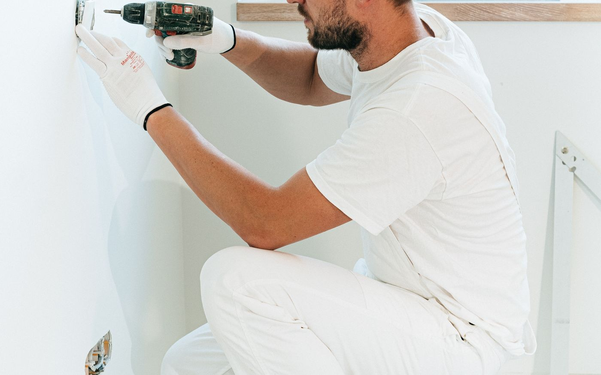
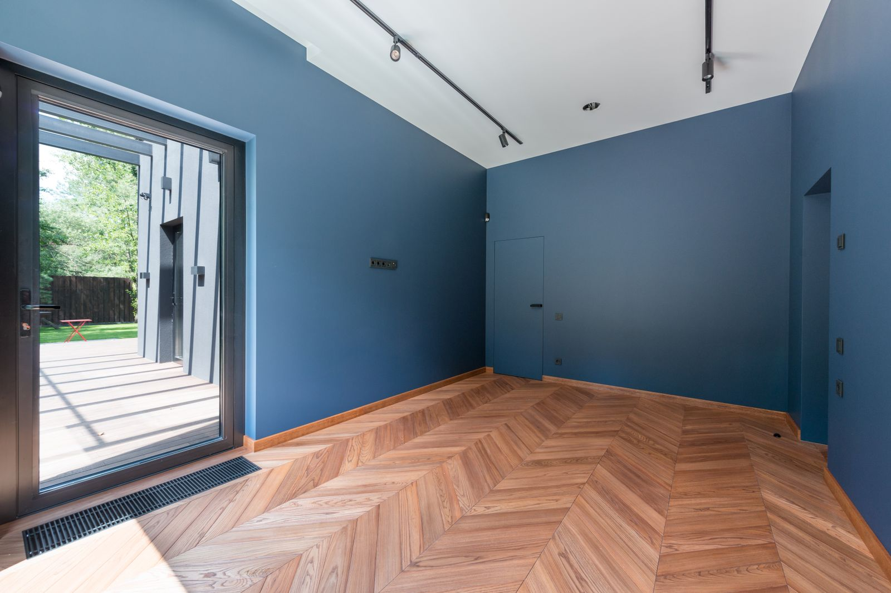

Accessible · 1 journée pour 20 m²
Poser un parquet flottant, étape par étape
Le tutoriel de référence : sous-couche, jeu de dilatation, coupes de périphérie et plinthes, avec les points de contrôle à chaque étape.
Tutoriels
Des déroulés de chantier détaillés : l'outillage nécessaire, les étapes dans l'ordre, les points de contrôle et les erreurs qui coûtent cher. De la pose flottante à la pose collée.

Accessible · 1 journée pour 20 m²
Le tutoriel de référence : sous-couche, jeu de dilatation, coupes de périphérie et plinthes, avec les points de contrôle à chaque étape.
Par où commencer
Le choix se fait sur le support et sur le motif, pas sur le parquet. Trois situations couvrent la grande majorité des chantiers.
La plus rapide et la plus accessible. Les lames se clipsent sans adhérer au support : rien n’est définitif, et c’est la seule pose réaliste sans expérience.
Plancher chauffant, grande surface, confort acoustiquePlus stable, plus silencieuse, sans jeu entre les lames et meilleure conductrice de chaleur. En contrepartie, elle ne pardonne aucune improvisation.
Point de Hongrie, bâton rompu ou diagonaleUn motif en V ou en biais se trace avant de se poser. Une heure de traçage évite deux jours de rattrapage, quel que soit le mode de pose retenu.
Poser sur un carrelage existant est possible en pose flottante, si le support est sain, adhérent et suffisamment plan — voir le guide de préparation du sol.
Ce que vous trouverez
Tous suivent la même trame, pour que vous puissiez travailler avec la page ouverte à côté de vous.
Avant d’ouvrir le premier paquet
Rien d’exotique, mais rien d’optionnel non plus : la moitié des reprises viennent d’un outil manquant qu’on a remplacé par un autre.
Le détail, format par format, figure au début de chaque tutoriel.

Avant AprèsAvant de commencer
Le sens de pose et le motif se décident sur le papier, mais se jugent à l’œil. Essayez-les sur une photo de votre pièce : le rendu est calculé dans votre navigateur, votre photo n’est ni envoyée ni conservée.
Questions fréquentes
Cinq points qui décident souvent si l’on pose soi-même ou si l’on fait appel à un professionnel.
Une pose flottante en lames droites est à la portée d’un bricoleur méthodique : les lames se clipsent et rien n’est définitif. La pose collée et les motifs en V demandent de l’expérience, parce qu’une erreur de traçage ou d’encollage ne se rattrape plus une fois la colle prise.
Comptez environ une journée en pose flottante et un à deux jours en pose collée, auxquels s’ajoute la préparation du support — souvent le poste le plus long. Un motif en point de Hongrie peut doubler ce temps.
Un mètre, une équerre, un crayon, des cales de dilatation, un maillet blanc avec sa cale de frappe, un tire-lame pour les dernières rangées et une scie. Une règle de deux mètres sert à contrôler la planéité du support avant de commencer.
Oui. Les paquets restent fermés dans la pièce où le parquet sera posé, à température d’usage, 48 heures au minimum — davantage pour du massif. Poser des lames qui n’ont pas atteint l’hygrométrie du logement expose à des jeux ou à des tuilages.
De l’ordre de 8 à 10 mm contre chaque mur et autour de tout point fixe — tuyaux, huisseries, seuils — davantage sur les grandes largeurs. Les plinthes le masquent ensuite. C’est l’oubli qui oblige le plus souvent à tout déposer.
Décrivez votre pièce, votre support et le rendu recherché en quatre étapes, sans laisser vos coordonnées : vous voyez aussitôt vers qui vous tourner.